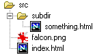
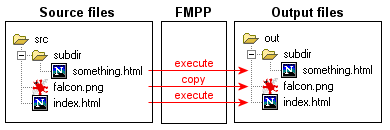
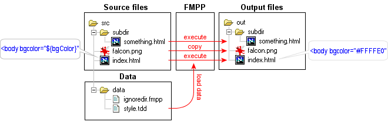
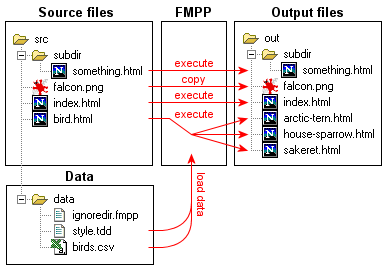

Quick Tour |
| |
Page contents
This chapter is a quick, very rough introduction to FMPP. Just to get some impression on its logic.
The basic idea is that you have source root directory and an output root directory. The source root directory contains the files to process, and the output root directory will contain the processed files. Processing the file either means that FMPP will execute the file as FreeMarker template, or that it will copy the file as is (in the case of image files, archive files, etc.). (In fact there are other seldom used processing modes as well, like XML rendering.)
To see an example, go to the <FMPP>/docs/examples/qtour_step1 directory. Here we have a directory called src:

Also, you will find config.fmpp in the qtour_step1 directory. This file contains the settings for FMPP, and now contains this:
| |||
If you issue fmpp command from the command-line while you are in the qtour_step1 directory, then FMPP will process the src directory and places the output into the out directory. On the console you will see something like:
| |||
and the newly created out directory will contain exactly the same files and subdirectories as src.

The above messages suggest that the PNG file was copied, while the two HTML-s were executed:
If you look into the two HTML-s of qtour_step1/src, you see that both contains this line:
| |||
Assume you want to store these colors in a single centralized place, so if you change them, all pages will change. For this, you have to tell FMPP what data to expose for the templates. For now, tell FMPP to load data from a TDD file. A TDD file is a simple text file that stores name-value pairs. (It happens to be the same format that config.fmpp uses, but it's just accidental coincidence. You could load data from other type of data source in the same way.) If you go to the <FMPP>/docs/examples/qtour_step2 directory, you will find style.tdd in src/data that contains this:
| |||
Both line in both HTML-s has been changed to:
| |||
The two ${...}-s are instructions to FreeMarker that insert the value of a variable. When I'm saying that FMPP exposes data for the templates, then it simply means that it creates variables for the templates, based on some data source. We tell FMPP to load data from data/style.tdd file before it starts to process the files, in the config.tdd of the qtour_step2 directory:
| |||
If you issue an fmpp command in the qtour_step2 directory, and look into the result in the out directory, then you will see that the ${...}-s in the HTML files are replaced with the actual colors.

It is important that the data directory was not copied into the output (the files in it were not "executed" or "copied"). This is because src/data contains a file with name ignoredir.fmpp, and the presence of this file instructs FMPP not to process the directory.
You can use any number of data sources, not only a single file. In <FMPP>/docs/examples/qtour_step3 I have added one more data source: data/birds.csv. CSV is a primitive format often used to exchange data among spread sheet applications and other applications. bird.csv stores a table with "name", "description" and "favoriteFood" columns. I want to use the content of this table in the generated HTML pages later, so let load this table into variable birds, in config.fmpp:
| |||
Here FMPP creates variables for the templates from multiple data sources (data/style.tdd, data/birds.csv).
The index.html now contains some new lines, that fetch the data form the CSV file via the birds variable, and print a list from it. The <#...> tags are instructions to FreeMarker (see in the FreeMarker Manual):
| |||
The output of the above template lines will be something like:
| |||
Note that the template uses birds variable independently of the actual file format (CSV) behind it. You could replace the CSV with whatever data source that can be interpreted as table (as a database table) and the templates could be the same, only the config.fmpp has to be adjusted. (However, FMPP supports only a few data source types out of the box yet, so maybe you have to write/obtain extension Java classes for it.)
You can find more information about data and data loading here.
Let's say you want to create separate HTML pages for each birds, rather than listing all information about them on the index page, and you want only link to those pages on index.html. <FMPP>/docs/examples/qtour_step4 does this. The index page had trivial changes to generate the links. The interesting is that we have a new file, bird.html. This single file is the template for all bird pages, and will generate a separate HTML file for each birds:

The bird.html looks as this:
| |||
The <@...> tags are instructions to FreeMarker (see the FreeMarker Manual). The pp variable is defined by FMPP, and is always there, automatically. It stores the built-in variables of FMPP, e.g. directives as dropOutputFile above. <@pp.dropOutputFile /> instructs FMPP to drop the current output file, so we will not have bird.html in the output directory. <@pp.changeOutputFile .../> instructs FMPP to start a new output file with the given name. So bird.html will produce 3 output files (one output file for each row of the table): arctic-tern.html, house-sparrow.html, and sakeret.html.
|
||